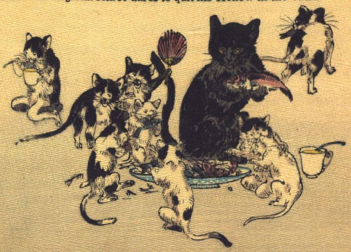

猫の群れ。魚が盛られた皿を囲み、魚を食べている。皿のすぐそばに、他の猫より大きな黒猫が座り、前脚で赤い魚を持ち上げている。他の猫たちも銘々に魚を食べており、地面に魚の骨が散かっている。1匹は団扇を持ち上げ、はしゃぐような仕草をしている。別の1匹は後脚で座り、スプーンでコップの中の液体を飲んでいる。
著作者：John Little Archibald／出典：親書誌：U426_nichibunken_0122：The rat's plaint／日付：2006／資源識別子：U426_nichibunken_0122_0011_0000
Copyright (c)2010- International Research Center for Japanese Studies, Kyoto, Japan. All rights reserved.